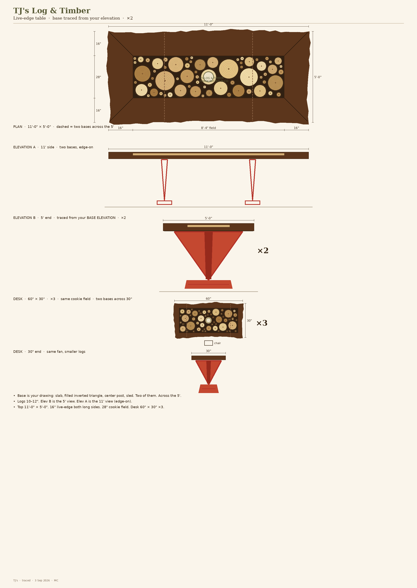
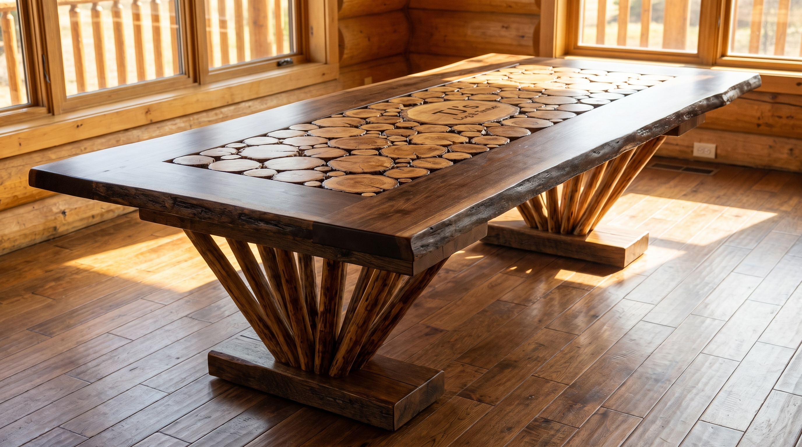
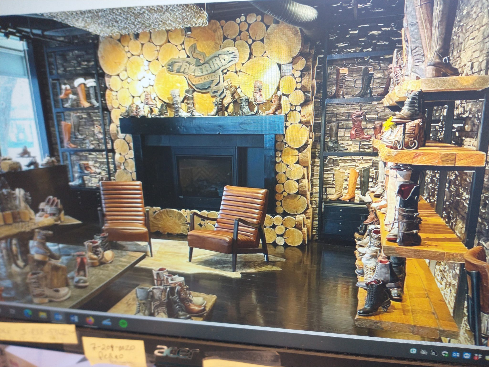

Schematic. Dark live-edge slab rim. Light 16–24" log ends in the field. Center stamp log. Inverted truss bases.

Beauty still (first pass — bases still busier than the pen):

Center field reference (wall):
